We built the experience we believed in. Then the cohorts challenged everything.
The cohorts were getting worse after launch. We rebuilt how people start, how they discover the AI, and how it pays for itself.
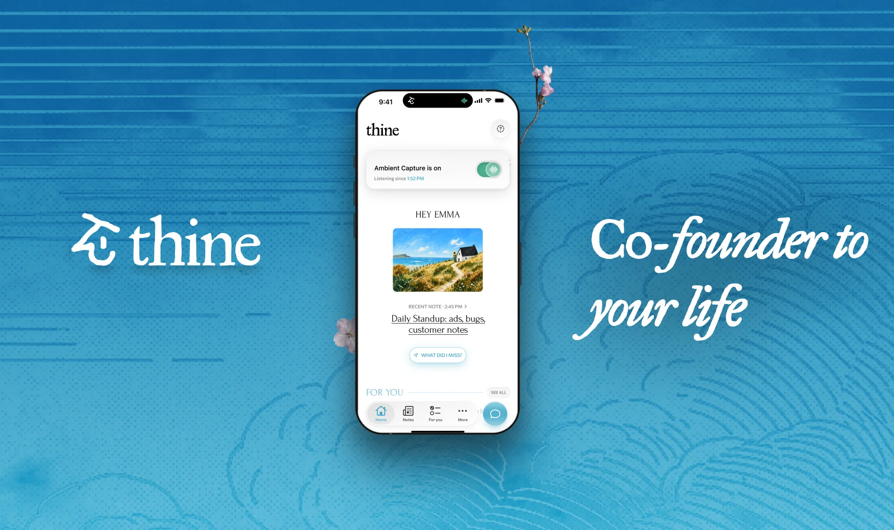
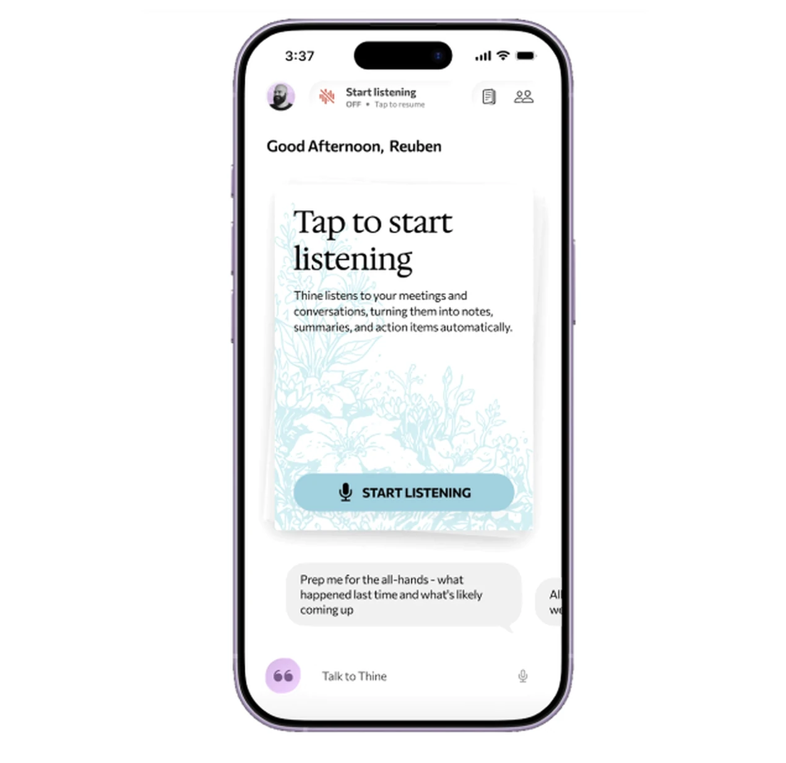
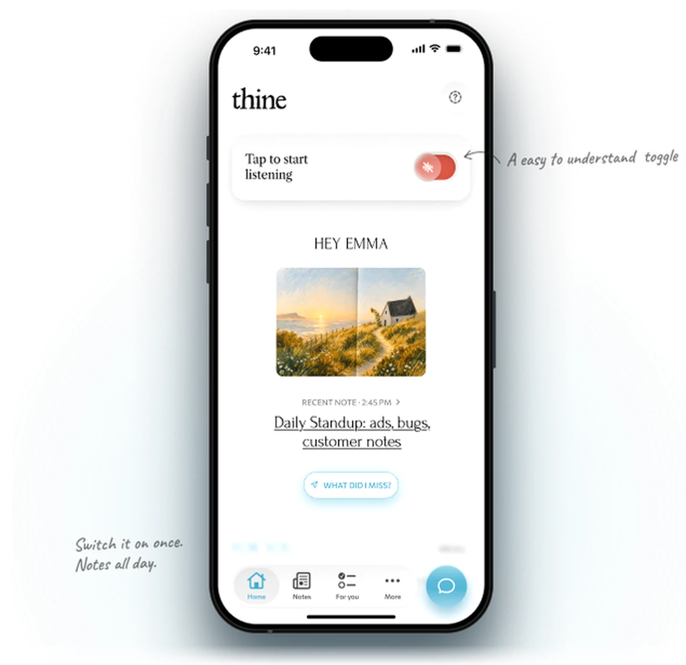
A privacy-first personal intelligence that lives alongside you across work and life, holding the context most tools throw away, and surfacing it back when it matters, not only when you remember to ask.
Thine is a personal AI that listens to your day, remembers conversations, and turns that context into useful actions.
Our first version used horizontally swipeable cards and progressive disclosure to make a complex product feel visually minimal.
We liked the experience. Our existing users were engaged. But PostHog revealed declining performance among newer cohorts.
The longer people used Thine, the more valuable it became. The problem was getting them to stay long enough to discover that value.
We had optimised for the experience of someone who already understood the product.
Our first-time experience was asking users to earn the value before they could see it.
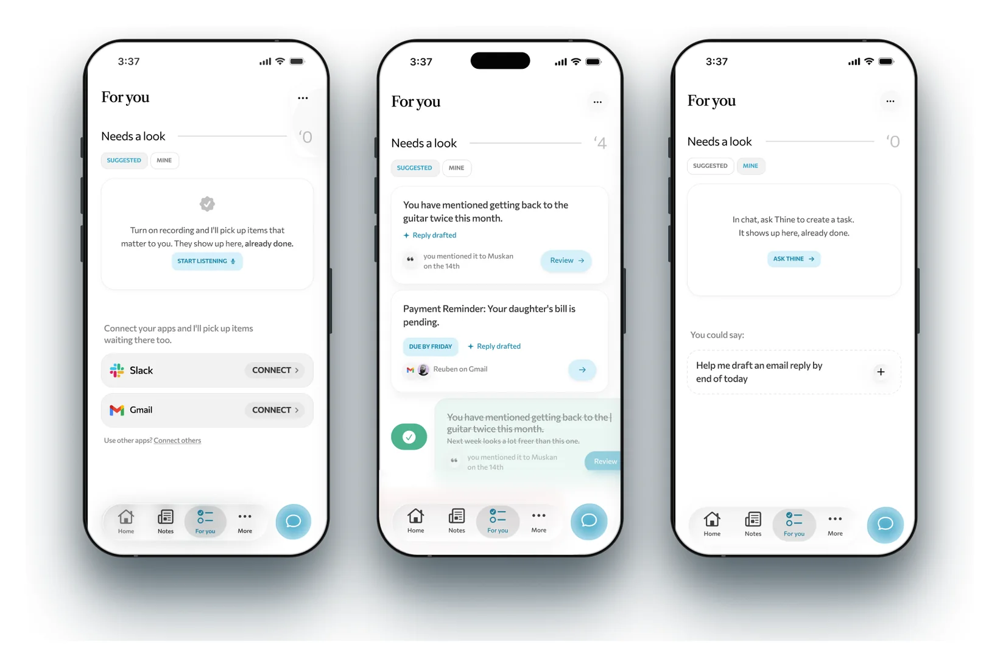
We contacted over 400 first-time users, including people in San Francisco and other markets, and observed how they approached Thine.
The same confusion kept surfacing.
Users couldn't predict whether swiping a card would dismiss it, delete it, or simply move to the next one. Some hesitated to interact at all.
PostHog added another dimension. Users who made it through the early learning curve showed substantially stronger retention, while ambient capture activation remained weak.
This shifted our diagnosis.
We weren't dealing with a product that lacked utility. We were dealing with an experience that delayed utility.
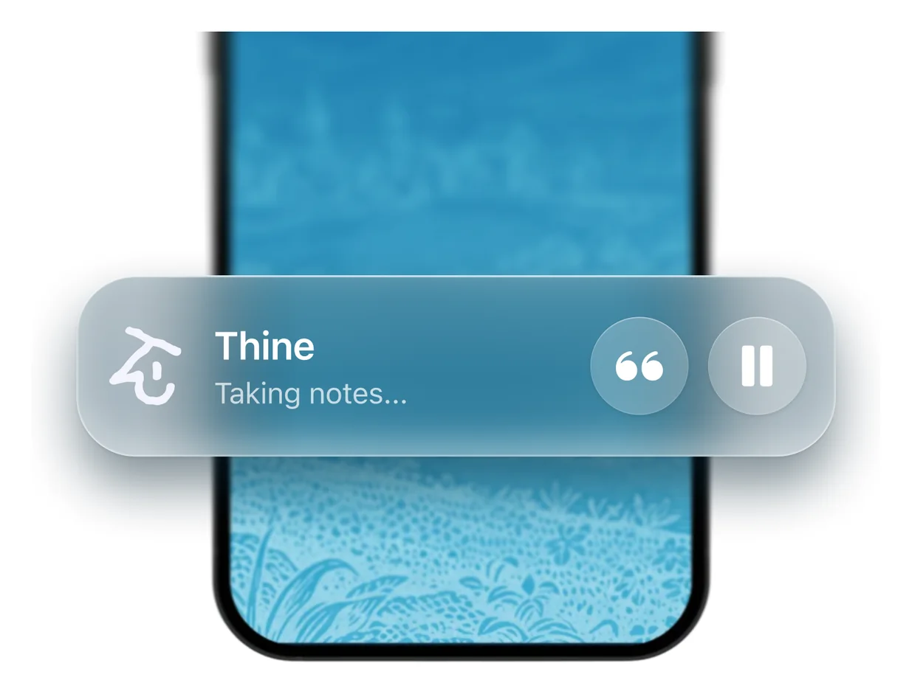
Before committing to a redesign, we considered three directions.
Direction A — Make the cards easier to learn. Retain the existing interaction model and add gesture hints, tutorials, and clearer card states. This protected the original design investment and distinctive interaction language. But it still required users to learn a new system before reaching the product's value.
Direction B — Reduce the number of features. Strip back the initial experience to capture and chat, hiding everything else until later. This would reduce visible complexity, but risk making Thine feel like a basic recorder and weakening its broader co-founder proposition.
Direction C — Keep the product depth. Remove the interaction tax. Return to familiar vertical scrolling, explicit actions, and a clearer hierarchy while preserving the product's capabilities. It meant sacrificing some of the novelty of Thine 1.0, but gave users a predictable way to navigate immediately.
We chose Direction C.
Not because vertical scrolling was more innovative, but because the product itself was already unfamiliar enough.
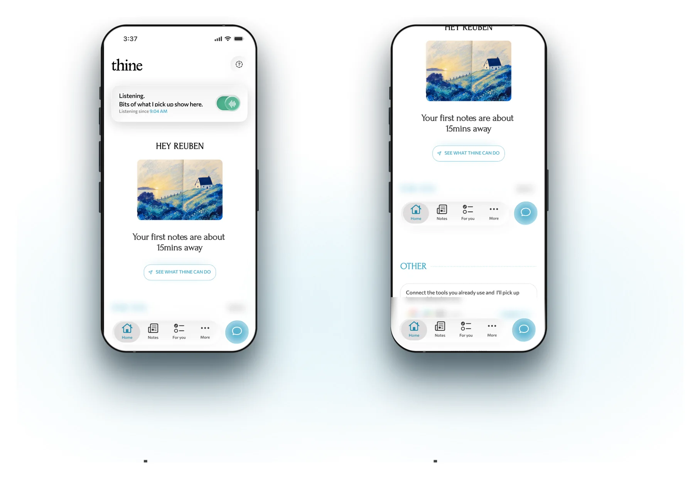
Our hypothesis was that reducing interaction uncertainty would shorten the time to first capture and improve early retention.
We translated that into three design principles:
The trade-off was intentional.
We were willing to lose some interface distinctiveness to improve the probability that users experienced Thine's actual differentiation: its memory and intelligence.
We shipped a more conventional navigation model, a clearer home hierarchy, and a more accessible capture entry point, with the intention to validate quickly and iterate.
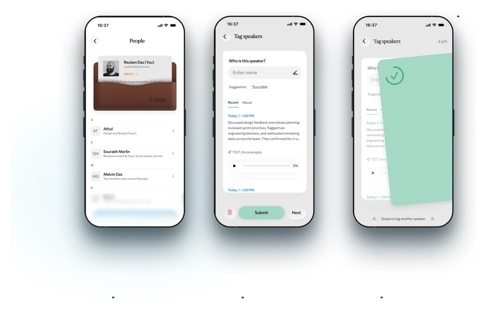
Ambient capture was the behaviour most closely tied to the product's recurring value.
Increasing recordings became the next P0. Every other part of the product sits on top of them: notes are written from capture, context intelligence is built on it, and acting as a partner depends on it.
For You is the clearest case. A draft email already waiting, a reminder set inside the app, a suggestion raised before it is asked for: each one is assembled from context gathered during a recording. No capture, nothing to act on.
Our data showed that 80% of users who recorded beyond five minutes went on to capture more than four hours.
This didn't prove that five minutes caused long-term retention. But it gave us a meaningful behavioural threshold to investigate.
We redesigned onboarding around reaching the first capture with less friction.
Instead of teaching users the product before letting them use it, we moved towards helping them experience its value in the first session.
The design priority became getting users into the core loop, not through a feature tour.
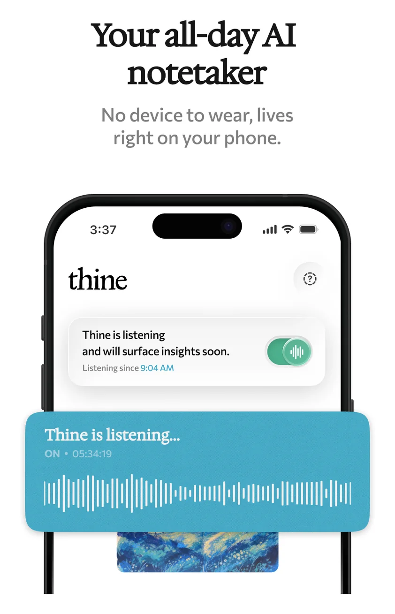
Solving capture wasn't enough.
Thine could draft emails, prepare for meetings, and act on remembered context. Yet weekly chat adoption was below 10% and trending downward.
We considered making chat more prominent, adding example prompts, or guiding users through conversational onboarding.
But those approaches still depended on users understanding what they could ask.
Our hypothesis shifted from making chat easier to find to making reasons to use chat easier to recognise.
We introduced For You, a proactive surface that converts remembered conversations into contextual suggestions.
An email mentioned in a meeting could become a draft. An upcoming discussion could surface relevant context.
Each suggestion connected directly to chat.
The trade-off was between an open-ended AI experience and a more opinionated, guided entry point.
We chose guided discovery because the product already had enough context to make the first suggestion.
Chat adoption among active users grew 4×.
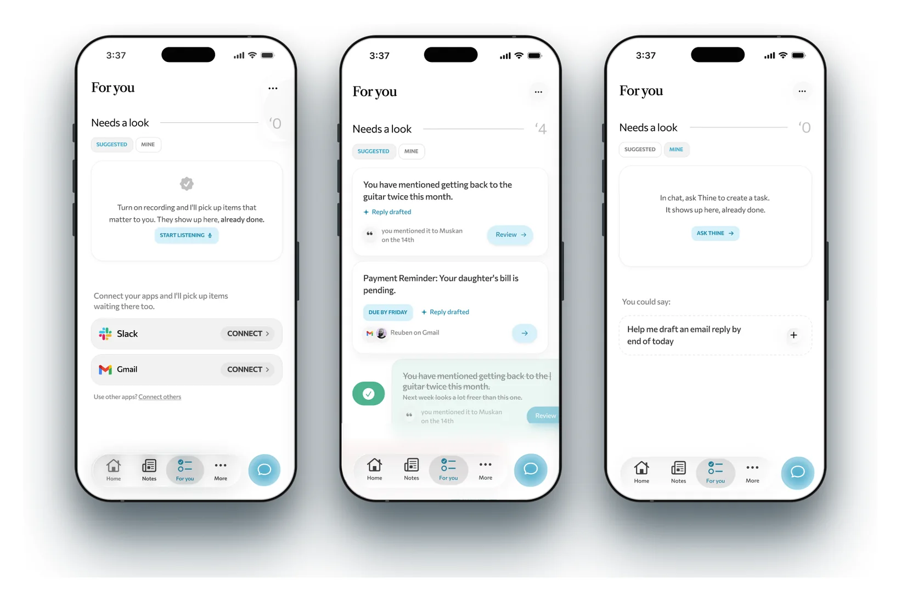
As capture usage increased, so did transcription, storage, and context-rich AI costs.
We needed to test whether users valued Thine enough to pay for it.
A recurring subscription offered predictable revenue, but a longer commitment could create friction for a product still establishing its category.
We explored a Lifetime Deal (LTD) as a way to test willingness to pay and generate upfront revenue.
The trade-off was clear: immediate cash flow and a simpler purchase decision versus the long-term cost of serving lifetime users.
Based on earlier performance, we expected 1–5% conversion.
20% of users converted.
The result substantially exceeded our forecast, giving us a strong monetisation signal while making sustainable lifetime-plan economics an important next challenge.
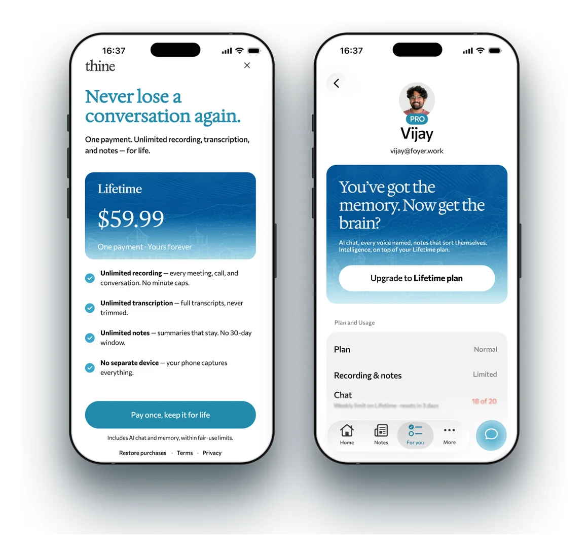
Within two months post-PMF, Thine reached over 50K users, with 60% capture-based retention, 4× chat adoption, and 20% LTD conversion.
The product's value became easier to understand through a connected experience:
Capture remembers. For You anticipates. Chat acts.
Rather than introducing more capabilities, we made the existing ones easier to discover and use.
These results supported the direction of the redesign, while acquisition, cohort mix, and other concurrent changes also contributed to overall growth.
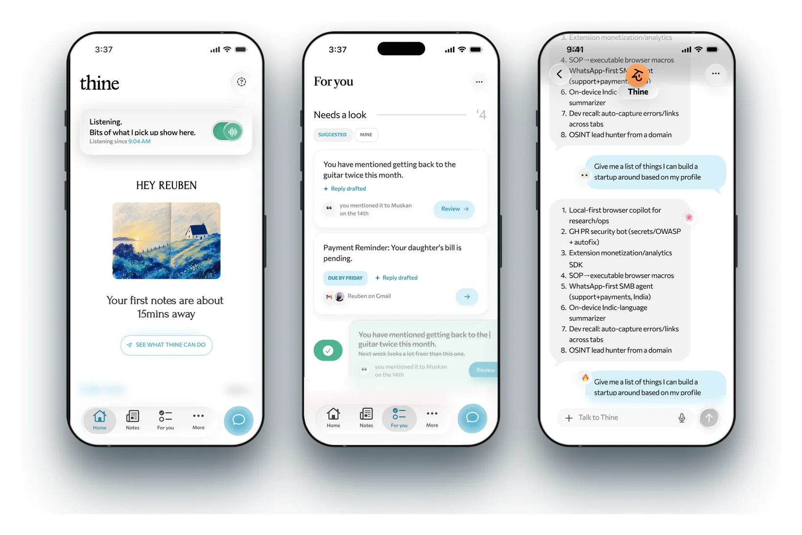
Despite stronger engagement among activated users, initial ambient capture activation remains below 5% in the current cohort being tracked.
Our next experiments focus on reducing friction before the first recording, strengthening the capture-to-memory payoff, and building organic growth loops with near-zero customer acquisition cost.
The challenge has shifted from proving that Thine can be valuable to making that value accessible to more people.
The original card interface was an intentional design decision. It made a complex product feel visually contained.
The research forced us to reconsider a direction we were invested in, and the data helped us prioritise the problems worth solving.
The most valuable lesson wasn't that vertical scrolling works better than horizontal cards.
It was that a product should spend its novelty budget on what makes it valuable, not on making users learn how to reach that value.